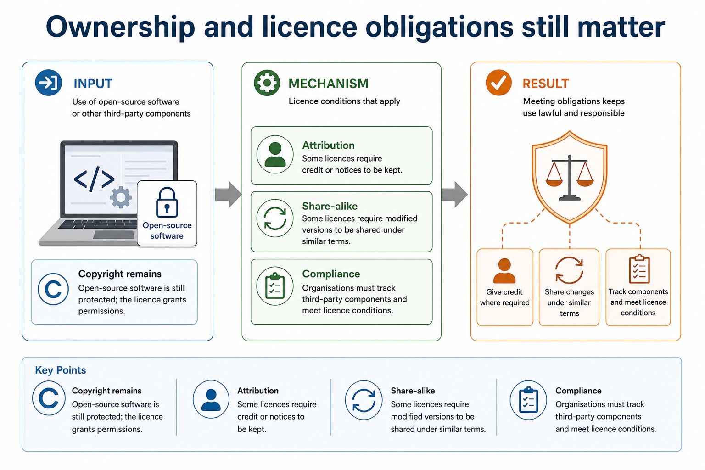

Cambridge AS9618 | Paper 1 | Section 7: Ethics and ownership
Copyright and software licences
Flexible-depth lesson
Copyright and software licences
S7.04, S7.05 | Select what to omit, teach briefly or explore in depth.
Quickdiagnose + essentials
Fullcomplete explanation
Deepprerequisites + extension
Choosepractice by need
Teacher choice
Choose the depth for this group
Quick route
Use the diagnostic, learning objectives, first worked example and foundation question. Stop once the learner can explain the central distinction accurately.
Full route
Teach every core explanation point, the worked example and all lesson questions. Use the visual only when it adds a different representation.
Deep route
Add the prerequisite refresher, ask learners to connect the concept checklist, discuss the labelled extension and complete a transfer question without a model answer.
Part 1 | optional depth
Prerequisite knowledge and quick diagnostic
Recall S7.04 before starting this lesson.
Give one accurate definition or method step before continuing. If it is missing, revisit only that prerequisite.
Open optional prerequisite refresher
Version 2 requires the need for copyright legislation, not only a definition. Evidence must connect protected software expression and restricted acts to enforceable permission, revenue or investment.
Show understanding of the need for copyright legislation for software.
Part 2 | deliberately over-complete
Knowledge explanation
Learning objectives
Show understanding of the need for copyright legislation for software.
Explain different software licensing types and justify a licence for a given situation.
Open the concept checklist and choose what to teach
copyright
software
legislation
needed
FSF
OSI
shareware
commercial
licences
licence
Detailed explanation
Teach all points, or select only the ones this group needs. The list is intentionally fuller than a fixed lesson slot.
Version 2 requires the need for copyright legislation, not only a definition. Evidence must connect protected software expression and restricted acts to enforceable permission, revenue or investment.
Version 2 explicitly includes the Free Software Foundation, Open Source Initiative, shareware and commercial software. All four must be taught; a scenario answer must justify permissions, restrictions, cost or support rather than choose by label alone.
Copyright legislation is needed because software can be copied and distributed at very low cost while its creation requires time, skill and investment. It gives the copyright holder legal control over protected expression such as source code and documentation, including copying, distribution and adaptation, so unauthorised use can be challenged and creators can license work and receive revenue. Copyright protects expression rather than every abstract idea, and a limited legal exception is not permission for unrestricted copying.
A software licence is the copyright holder's permission to use protected work under stated conditions; paying for or downloading software does not normally transfer ownership. The licence may allow or restrict installation, copying, modification and redistribution. Copyright legislation establishes the rights, while the licence defines which of those acts the user is permitted to perform.
The Free Software Foundation (FSF) emphasises freedoms to run, study, modify and share software; source access is necessary for study and modification. The Open Source Initiative (OSI) defines open-source criteria and approves licences that meet them. Free/open-source software can still be sold and remains protected by copyright; users must follow conditions such as preserving notices, attribution or sharing derivative source under compatible terms.
The required licence categories include FSF and OSI open-source licences, shareware and commercial software. A justified licence choice links its permissions, restrictions and cost to the stated situation.
Shareware is distributed for trial or limited use, with payment commonly required for continued, full or unrestricted use. A commercial/proprietary licence grants defined use while normally restricting copying, modification and redistribution.
Licence choice must fit the scenario: budget, support, source modification, redistribution, trial period, compatibility and legal obligations are relevant. 'Free to download' does not mean public domain.
Professional ethics has a purpose: computing professionals must protect public interest, work competently and remain accountable for consequences. Joining a professional ethical body such as the British Computer Society (BCS) or the Institute of Electrical and Electronics Engineers (IEEE) provides codes of conduct, guidance, continuing professional development and a community that supports standards. In a situation, judge whether action is ethical or unethical and explain stakeholder impacts of both choices.
Copyright legislation is needed to give creators enforceable control over software expression that can otherwise be copied and distributed cheaply. A licence grants permission without normally transferring ownership. The required licence categories are the Free Software Foundation (FSF), Open Source Initiative (OSI), shareware and commercial software; justify a choice from the scenario's permissions, restrictions, support, cost and redistribution needs.
Worked example
Modify and redistribute a library: A developer finds source code in a public repository. Copyright still protects the code, so visibility alone is not permission. An OSI-approved licence may allow modification and redistribution, while an FSF-aligned copyleft licence may require a distributed derivative to preserve notices and use compatible terms. The developer must check and follow the exact licence before copying the library into a product.

Ownership and licence obligations still matter. One maintained explanation is shown as an image on larger screens and as text on small screens.
Copyright remains Open-source software is still protected; the licence grants permissions.
Attribution Some licences require credit or notices to be kept.
Share-alike Some licences require modified versions to be shared under similar terms.
Compliance Organisations must track third-party components and meet licence conditions.
Part 3 | select by learner need
Practice by question type
explainexplainfoundation6 marks
Question 1. Explain why copyright legislation is needed for software and how an FSF- or OSI-aligned licence changes what a user may do with protected source code.
Show answer and marking guidance
Answer: software is easy to copy/distribute while creation requires skill, time or investment; copyright gives the holder control over protected expression and restricted acts; licence grants specified permissions without normally transferring ownership; FSF freedom or OSI licence-approval role is stated accurately; source inspection/modification/redistribution permission is linked to the licence; licence conditions such as notices, attribution or compatible redistribution terms remain binding
Marking guidance: Do not accept that copyright protects every idea, that a paid download transfers copyright, or that open source means public domain.
Common error: For the command word explain, perform that exact action; do not replace it with an unrelated fact.
applyrecallapplication2 marks
Question 2. Can open-source software be sold or remain copyrighted?
Show answer and marking guidance
Answer: Yes. Open source concerns licence permissions and conditions, not zero price or absence of copyright.
Marking guidance: Award one mark for each distinct, technically accurate point or method step.
Common error: Do not repeat the same point in different words; each mark needs a separate idea or method step.
identifyrecalltransfer2 marks
Question 3. Identify all four required software-licensing examples.
Show answer and marking guidance
Answer: Free Software Foundation (FSF), Open Source Initiative (OSI), shareware and commercial software.
Marking guidance: Award one mark for each distinct, technically accurate point or method step.
Common error: Do not copy the worked example unchanged; transfer the method and check it against the new context.
Related past-paper indexes
Reference
Marks
Command word
Question type
9618/12/W/25 Q2(a)
4
complete
recall
9618/12/S/25 Q3(i)
3
describe
explain
9618/12/S/25 Q3(ii)
3
describe
explain
9618/12/W/25 Q2(b)
2
complete
recall
Index only: Cambridge question and mark-scheme wording is not reproduced on this public course page.
Part 4 | close when ready
Summary and exam reminders
Summary
Define copyright and software licences with the exact technical vocabulary expected by the syllabus.
Use the lesson method on a fresh context and show the intermediate decision, representation or calculation.
Match the shape of the answer to the command word and the available marks.
Check the final answer against the scenario instead of repeating a memorised sentence.
Common error to correct
Students often write personal opinions only. Correction: ethics answers need stakeholders, evidence and balanced judgement.
Exam technique
Follow the command word: state gives a fact; explain links a cause to a consequence; compare covers both sides.
Match the number of independent points or method steps to the available marks.
For copyright and software licences, use the exact technical term before applying it to the scenario.